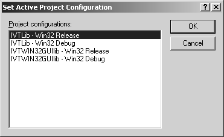
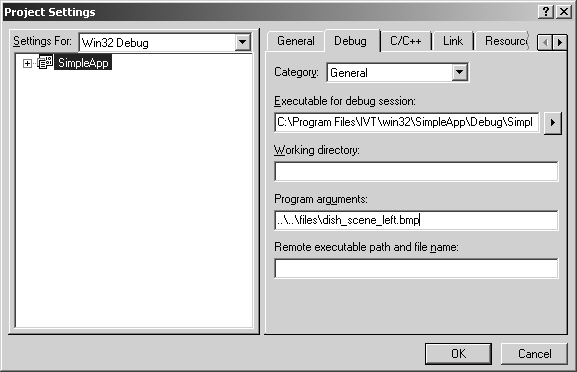
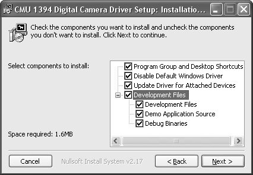

1. Setting up IVT
1.1. Downloading the IVT
Download the newest version of the IVT, e.g. ivt-1.3.7.zip, at http://sourceforge.net/projects/ivt/ in the download area.
1.2. Unpacking
The downloaded zip file can be unpacked into any directory. In the following, it is assumed that this directory is C:\Program Files. After extraction, the subdirectories doc, examples, files, lib, src and win32 can be found in C:\Program Files\IVT.
1.3. Settings in the development environment
The directory paths for the include and library files must be set in the development environment.
The include files are located in the subdirectory src of the IVT directory (i.e. C:\Program Files\IVT\src).
The library files are located in the subdirectory lib of the IVT directory (e.g. C:\Program Files\IVT\lib\win32).
1.4. Building the libraries
The workspace file IVT.dsw for Microsoft Visual C++ 6.0 is located in the directory win32\IVTLib. If this file is opened in a newer version of Microsoft Visual C++, then an automatic conversion into a new file format takes place and the workspace can be used likewise. Once opened, the version of the library that is to be built can be selected in the menu Build using the menu option Set Active Configuration....

Dialog window for the configuration of the active project.
The following versions are available:
-
IVTLib - Win32 Release
This is the core of the IVT library. Debug information is not included. The file name of the library file isivt.lib. -
IVTLib - Win32 Debug
The debug version permits step-by-step execution of the functions within the IVT library during debugging. Usually applications that are compiled with the debug version are noticeably slower throughout execution. The library to be generated has the file nameivtd.lib. -
IVTWin32GUILib - Win32 Release
With this selection, a further library is built. This is an extension to the standard version of the IVT library, which contains support for graphical user interface under Windows. The file name of the library isivtwin32gui.lib. -
IVTWin32GUILib - Win32 Debug
The debug version of the extension library again permits the debugging within the IVT source code. The file name of the debug version isivtwin32guid.lib.
ivt.lib) is located in the subdirectory IVT\lib\win32. In order to be able to later faultlessly compile and link all applications with the IVT, all four library files of the IVT should be built.
1.5. Example application
For checking the installation, and as an introduction to programming with the IVT, a suitable example application is SimpleApp. This is the simplest of the numerous example applications contained in the IVT. The workspace file SimpleApp.dsw is located in the IVT subdirectory win32\SimpleApp.
After having opened it in Microsoft Visual C++, the application should be compiled without any errors via the menu item Build SimpleApp.exe from the menu Build.
If a problem occurs, first it should verified which version has been selected in the menu Build under the menu item Set Active Configuration..., and whether the according IVT library file was built in the previous step. The example applications are configured for the debug version of the IVT library.
Before the application is executed, an image file should be set as program argument. The program arguments can be added in Project settings. To get there, go to menu Project and choose the menu item Settings.... On the tab Debug, ..\..\files\scene_left.bmp can be set as program argument, for example. This path points to an image file, which is contained in the subdirectory files of the IVT.

Dialog window for the project settings.
If the application is now executed from the menu Build and the menu item Execute SimpleApp.exe, the result output written to file 'output.bmp' is printed in the console window. Subsequently, the file output.bmp is located in the same directory as the workspace file SimpleApp.dsw i.e. in win32\SimpleApp in the IVT directory.
If up to here all steps have been accomplished, and the example applications could be compiled and executed, then a ready-to-use environment for programming with the IVT has been set up.
2. Optional: Setting up CMU1394
2.1. Downloading CMU1394
The setup version of the CMU1394 driver is found in the download area at http://www.cs.cmu.edu/~iwan/1394/. We recommend version 6.4.5, since compatibility of this version with the IVT has been ensured by various tests.
2.2. Installation
Executing the downloaded file starts a setup procedure. During the setup, the components to be installed, as well as the target directory of the installation can be selected. Here, make particularly sure that the component Development Files is installed. The default directory for the installation is C:\Program Files\CMU\1394Camera.

Setup of the CMU1394 driver.
2.3. Settings in the development environment
The directory paths for the development environment are as follows:
Path for the include files:
C:\Program Files\CMU\1394Camera\include
Path for the library files:
C:\Program Files\CMU\1394Camera\lib